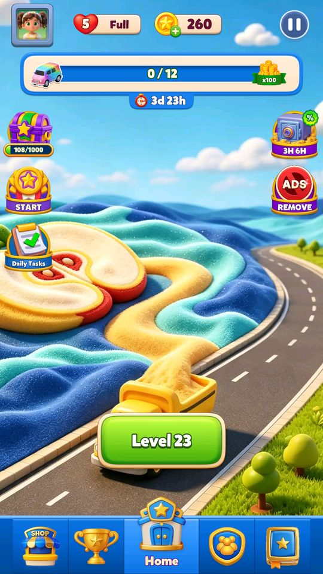

Nhiệm vụ hằng ngày
Mỗi ngày người chơi nhận 4 nhiệm vụ ngắn: luôn có 'đăng nhập', 'bắt đầu N màn', 'dùng booster', cộng một nhiệm vụ rút ngẫu nhiên (kiếm coin / kiếm sao / xem QC / mở…
Mô tả
- Mỗi ngày người chơi nhận 4 nhiệm vụ ngắn: luôn có 'đăng nhập', 'bắt đầu N màn', 'dùng booster', cộng một nhiệm vụ rút ngẫu nhiên (kiếm coin / kiếm sao / xem QC / mở rương / thắng N màn).
- Nhánh AB phiên bản 2 thì bộ 4 nhiệm vụ cố định, có 'thắng N màn' thay cho nhiệm vụ rút.
- Mỗi nhiệm vụ trả 20–50 coin hoặc 1–2 booster (bảng
任务池子-表格 2/3.csv). - Làm xong cả bộ thì có thêm phần thưởng lớn rút theo tỉ lệ (_collectBigReward).
- Nút hiện từ level 5, nhiệm vụ mở từ level 11 (
每日任务活动配置.json). - Tiến độ đến qua sự kiện
DAILY_TASK_CMDmà các hệ khác bắn (coin +/−, dùng booster, bắt đầu/thắng màn…). - Bể 13 loại nhiệm vụ trong CSV nhiều hơn số loại thực sự được chọn: loại 6, 7, 9, 10, 13 không lên lịch ở build này.
Thiết kế chi tiết
Tóm tắt thiết kế
APKCode Nút hiện từ level 5, làm được từ level 11 ('LV11 unlocked') theo 每日任务活动配置.json. Mỗi ngày (theo chỉ số ngày từ 1900-01-01) lập bộ mới gồm 4 nhiệm vụ.
Code Bộ mặc định: 'Login 1 time' (xong sẵn) + 'Start 10 levels' + 'Use Booster 3 time' + 1 nhiệm vụ rút trong {kiếm coin, kiếm sao, xem QC, mở rương, hoàn thành màn}. Nhánh AB getDailyTaskVersion() == 2 dùng bể 2 với bộ cố định: đăng nhập, bắt đầu 8 màn, dùng 1 booster, thắng 5 màn.
APK Thưởng (bể 3): đăng nhập 20 coin; kiếm 400 coin /  1.000 sao / xem 3 QC / mở
1.000 sao / xem 3 QC / mở  1 rương / thắng 8 màn: 50 coin; bắt đầu 10 màn:
1 rương / thắng 8 màn: 50 coin; bắt đầu 10 màn:  1 魔棒; dùng 3 booster:
1 魔棒; dùng 3 booster:  1 时间冻结. Làm xong cả bộ thì có thêm thưởng lớn rút theo tỉ lệ (bảng
1 时间冻结. Làm xong cả bộ thì có thêm thưởng lớn rút theo tỉ lệ (bảng 每日奖励-表格 1.csv không có trong assets_dec).
CodeLive 13/11 Tiến độ đến qua sự kiện DAILY_TASK_CMD: coin +/− đẩy loại 2/9, dùng booster đẩy 5/6, mở rương đẩy 11. Snapshot 13/11: 'kiếm 400 coin' đã xong ngay ngày đầu vì quà 1.000 coin khởi đầu cũng được tính.
Nhận định CSV có 13 loại nhiệm vụ, nhưng bộ chọn chỉ dùng 8. 'Thắng liên tiếp', 'tiêu coin', 'ghép 150 cặp', 'dùng tăng cường', 'tham gia sự kiện' là nội dung chờ sẵn cho AB.
Luồng người chơi từng bước
- Nút Daily Tasks (level 5)Giao diệnCodeAPK
checkEntraceNode: level ≥ 5 và cờ ẩn = false thì hiện nút 'Daily Tasks'. Trước level 11, nhiệm vụ ghi 'Not Yet Unlocked' / 'Unlocked at level 11'.
Trang chính level 23: nút Daily Tasks đã mở ở cột trái (dưới rương sao và START), icon mới cột phải (playtest 15/11, level 23) - Lập bộ của ngàyClientCode
initTaskWithDays: sang ngày mới thì xoá dữ liệu cũ, thêm 'Login' (tiến độ 1, xong sẵn), rồi 'Start levels', 'Use Booster', và rút uniform 1 loại trong [2, 3, 8, 11, 12]. Nhánh version 2 thì bộ cố định [1, 4, 5, 12]. - Mở bảng nhiệm vụNgười chơiCodeAPKBảng có đồng hồ tới lúc đổi bộ, mỗi dòng có tên (vd 'Start #!1 levels'), thanh x/y, icon và số thưởng, nút Claim / Play.
- Làm nhiệm vụ trong mànNgười chơiCodeCác hệ bắn DAILY_TASK_CMD;
_addTaskProgresscộng dồn, riêng 'Winning streak' giữ giá trị lớn nhất. Bấm Play thì vào màn kế tiếp (gotoPlayMetaGame). - Nhận thưởng nhiệm vụNgười chơiCodeClaim: thưởng '金币' bay coin về thanh, thưởng khác cộng booster (
onCollectSubTaskReward). Thanh tổng phía trên tăng. - Thưởng lớn khi xong bộNgười chơiCodeThanh tổng đầy:
_getRewardrút theo tỉ lệ,_collectBigRewardmở rương qua bộ trao thưởng (cũng tính +1 'mở rương'). - Đổi ngàyClientCodeLive 13/11Bản lưu
goods_match_daily_task_20250423: a3 là danh sách {loại, tiến độ, xong, đã nhận}; a5 = ngày bắt đầu (46337 = 13/11/2026). Ngày mới thì lập lại bộ.

Bể nhiệm vụ dùng thật (任务池子-表格 3.csv, nhánh mặc định)
| Loại | Nhiệm vụ (text en) | Mục tiêu | Thưởng | Vào bộ |
|---|---|---|---|---|
| 1 | Login #!1 time | 1 | 20 coin | luôn có |
| 4 | Start #!1 levels | 10 | 魔棒 ×1 | luôn có |
| 5 | Use Booster #!1 time | 3 | 时间冻结 ×1 | luôn có |
| 2 | Obtain #!1 golds | 400 | 50 coin | rút 1/5 |
| 3 | Get #!1 stars | 1000 | 50 coin | rút 1/5 |
| 8 | Watch ads #!1 times | 3 | 50 coin | rút 1/5 |
| 11 | Get rewards from #!1 chest | 1 | 50 coin | rút 1/5 |
| 12 | Complete #!1 levels | 8 | 50 coin | rút 1/5 |
APK Bể 2 (version 2): đăng nhập → 时间冻结 ×1; kiếm 200 coin; 50 sao; bắt đầu 8 màn; dùng 1 booster; thắng 5 màn → 时间冻结 ×2.
Loại có trong CSV nhưng không được chọn (build 41.0)
| Loại | Nhiệm vụ | Mục tiêu / thưởng |
|---|---|---|
| 6 | Use PowerUp | 1 → 锤子 |
| 7 | Match items | 150 → 锤子 |
| 9 | Use golds | 800 → 时间冻结 |
| 10 | Winning streak | 4 → 魔棒 |
| 13 | Participate in tournament/event | 1 → 魔棒 |
Code Bộ chọn trong initTaskWithDays chỉ dùng [1, 4, 5] + [2, 3, 8, 11, 12].
Vận dụng cho game khác
- Giữ 3 nhiệm vụ cố định dạy thói quen (đăng nhập, chơi, dùng booster) và 1 nhiệm vụ rút ngẫu nhiên để mỗi ngày có chút khác biệt.
- Cho 'đăng nhập' xong sẵn: người chơi mở bảng là thấy ngay một nút Claim. Đây là mồi rẻ để họ ghé bảng mỗi ngày.
- Đặt 'dùng booster' thành nhiệm vụ cố định và thưởng lại đúng một booster: người chơi tập dùng booster mà kho không cạn.
- Để sẵn các loại nhiệm vụ chưa dùng trong CSV và chọn bộ bằng một hàm theo AB version giúp đổi nội dung mà không phải ra bản mới.
- Nhận định Rủi ro: quà khởi đầu và các khoản coin lớn đều tính vào 'kiếm coin', nên nhiệm vụ này hầu như tự xong. Nên chỉ đếm coin kiếm được từ gameplay.
Ảnh cần chụp (4) — 1 ảnh đã gắn
Chụp vào screens/deep_1113/DailyTasks/ rồi ghi tên file vào flow[].shots.
- Nút Daily Tasks (level 5): Home với nút Daily Tasks (level 5–10: trạng thái khoá)
- Mở bảng nhiệm vụ: Bảng 4 nhiệm vụ với đồng hồ, thanh tiến độ, nút Claim/Play
- Nhận thưởng nhiệm vụ: Coin bay sau khi Claim nhiệm vụ đăng nhập
- Thưởng lớn khi xong bộ: Rương thưởng lớn khi thanh tổng đầy
Bảng tổng hợp mọi tính năng đã làm chi tiết: JamBus_ThietKeChiTiet.xlsx.
Mở khóa & điểm vào
Config 每日任务活动配置.json: 任务入口显示需要等级 (level hiện nút) = 5, 任务开启需要等级 (level mở) = 11, 任务开始循环 = 15. Bản _debug.json: hiện nút từ 0. DailyTaskNewSystem::_canShowEntranceView: level ≥ 5 và cờ lưu +0x70 = false; DailyTaskNewSystem::_isUnlockDailyTask: level ≥ 11. Bản debug được chọn khi adapter có cờ +0x19 (DailyTaskNewAdapter::getConfigFile).
Điểm vào:
- Nút Daily Task trên Home (DailyTaskNewAdapter::onShowEntrance 'DailyTask', DailyTaskViewCtrl::showEntrance / updateEntrance)
- Bảng nhiệm vụ (DailyTaskViewCtrl::showTaskPanel): đồng hồ, thanh tiến độ, nút nhận, nút 'đi chơi'
- Nút 'Go' đưa vào màn (DailyTaskNewAdapter::gotoPlayMetaGame)
- Phần thưởng lớn khi xong bộ (DailyTaskViewCtrl::_collectBigReward)
Cách hoạt động
- DailyTaskNewAdapter::checkDailyTask tạo DailyTaskNewSystem khi hoạt động bật, rồi initDailyTaskSystem nạp: bể nhiệm vụ (
任务池子-表格 2.csvnếu getDailyTaskVersion() == 2, ngược lại任务池子-表格 3.csv),每日奖励-表格 1.csv(thưởng lớn),显示名称-表格 1.csv(key text theo loại),任务图标-表格 1.csv(icon thưởng) và config cơ bản JSON. - DailyTaskNewSystem::initTaskWithDays so chỉ số ngày (số ngày từ 1900-01-01) với ngày bắt đầu đã lưu.
- Sang ngày mới thì resetAllData và lập bộ mới: loại 1 (đăng nhập) luôn có và hoàn thành sẵn tiến độ 1.
- Phiên bản 2: thêm loại 4, 5, 12 cố định.
- Phiên bản khác: rút 1 loại trong {2, 3, 8, 11, 12} và thêm cả 4 và 5.
- DailyTaskViewCtrl::selectTasksToShow dựng danh sách hiển thị.
- Tiến độ đến qua custom event
DAILY_TASK_CMD: _addTaskProgress(loại, giá trị) cộng dồn, riêng loại 10 (thắng liên tiếp) giữ giá trị lớn nhất (taskIsnotAdd). - Đạt mục tiêu thì nhiệm vụ sáng nút nhận.
- Nhận thưởng gọi DailyTaskNewAdapter::onCollectSubTaskReward: '金币' bay coin, còn lại là booster.
- Thanh tổng (task_big_progress) đầy thì _collectBigReward rút thưởng bằng randomIndexByRatio rồi onCollectBigReward mở rương (OpenBoxRewardParam).
- Dữ liệu lưu ở
goods_match_daily_task_20250423.
Phần thưởng
Phần thưởng (theo GDD)
| Ngữ cảnh | Phần thưởng | Bằng chứng |
|---|---|---|
| Nhiệm vụ con (bể 3) | 金币 20 (đăng nhập), 金币 50, 魔棒 1, 时间冻结 1 | 任务池子-表格 3.csv |
| Nhiệm vụ con (bể 2) | 时间冻结 1 (đăng nhập), 金币 50, 魔棒 1, 时间冻结 2 (thắng 5 màn) | 任务池子-表格 2.csv |
| Xong cả bộ | Rút theo tỉ lệ từ 每日奖励-表格 1.csv (không có trong assets_dec) | DailyTaskViewCtrl::_getReward |
Số liệu chính
| Chỉ số | Giá trị | Nguồn |
|---|---|---|
| 任务开启需要等级 (level mở) | 11 | 任务开启需要等级 (level mở) · json default |
| Chưa thấy nơi dùng | 15 | 任务开始循环 (bắt đầu xoay vòng) · json default |
Use case (12)
Bấm vào từng use case để mở. Mở/đóng tất cả
UC-01 Khởi tạo hệ nhiệm vụ và chọn bể
Các bước- DailyTaskNewAdapter::initDailyTaskSystem: getDailyTaskVersion() (RedABTest::getDailyTaskVersion) == 2 → '任务池子-表格 2.csv', ngược lại '任务池子-表格 3.csv'
- Kèm '每日奖励-表格 1.csv', '显示名称-表格 1.csv', '任务图标-表格 1.csv' và '每日任务活动配置.json' (hoặc _debug.json)
- DailyTaskNewSystem::setUp → DailyTaskConfigData::loadTaskPoolCSV, loadAllDailyTaskCSV, loadDisplayNamesCSV, loadRewardIcon, loadBaseCfgJson
| Actor | System |
|---|---|
| Trigger | DailyTaskNewAdapter::checkDailyTask khi hoạt động active |
| Kết quả | Bể 1 (任务池子-表格 1.csv) không được dùng trong build này |
| Quy tắc / số liệu | Config JSON đọc ba số: 5 / 11 / 15 |
| Evidence | DailyTaskNewAdapter::checkDailyTask; DailyTaskNewAdapter::initDailyTaskSystem; DailyTaskNewAdapter::getDailyTaskVersion; DailyTaskNewSystem::setUp; DailyTaskConfigData::loadTaskPoolCSV; DailyTaskConfigData::loadBaseCfgJson |
UC-02 Hiện / ẩn nút theo level
Các bước- DailyTaskNewSystem::checkEntraceNode: level ≥ 任务入口显示需要等级 (5) và cờ lưu +0x70 = false → DailyTaskViewCtrl::showEntrance, updateEntrance
- Ngược lại hiddenEntrance
| Actor | System |
|---|---|
| Trigger | Home cập nhật (DailyTaskNewAdapter::update) |
| Kết quả | Nút hiện từ level 5 |
| Quy tắc / số liệu | Cờ +0x70 bật thì ẩn nút (có thể là 'đã nhận thưởng lớn hôm nay' — suy luận) |
| Evidence | DailyTaskNewAdapter::update; DailyTaskNewSystem::checkEntraceNode; DailyTaskNewSystem::_canShowEntranceView; DailyTaskViewCtrl::showEntrance; DailyTaskViewCtrl::hiddenEntrance |
UC-03 Khoá nhiệm vụ trước level 11
Các bước- DailyTaskNewSystem::_isUnlockDailyTask: level ≥ 11
| Actor | Player |
|---|---|
| Trigger | Mở bảng nhiệm vụ |
| Điều kiện | Level 5–10 |
| Kết quả | Nhìn thấy nút nhưng chưa làm được (thông báo mở ở level 11 — suy luận) |
| Quy tắc / số liệu | 任务开启需要等级 = 11 |
| Evidence | DailyTaskNewSystem::_isUnlockDailyTask |
UC-04 Sang ngày mới: lập bộ nhiệm vụ
Các bước- DailyTaskSavedData::resetAllData; lưu khoảng cách ngày mới
- Thêm loại 1 (đăng nhập) với tiến độ 1, hoàn thành
- Phiên bản 2: thêm 4, 5, 12
- Phiên bản khác: rút uniform 1 loại trong [2, 3, 8, 11, 12]; rút lần lượt hết [4, 5]
- DailyTaskViewCtrl::selectTasksToShow
| Actor | System |
|---|---|
| Trigger | DailyTaskNewSystem::initTaskWithDays |
| Điều kiện | Chỉ số ngày (todayTo19000101) − ngày bắt đầu ≠ số ngày đã lưu, hoặc chưa khởi tạo |
| Kết quả | 4 nhiệm vụ / ngày. Snapshot 13/11: loại 1 (xong), 2 (tiến độ 1000, xong), 4 (1), 5 (0); ngày bắt đầu 46337 = 13/11/2026 |
| Quy tắc / số liệu | Loại 6, 7, 9, 10, 13 có trong CSV nhưng không được chọn |
| Evidence | DailyTaskNewSystem::initTaskWithDays; DailyTaskSavedData::resetAllData; DailyTaskViewCtrl::selectTasksToShow |
UC-05 Nhận tiến độ qua sự kiện
Các bước- DailyTaskNewSystem::_addEventListeners đăng ký listener
- _addTaskProgress(loại, v): loại 10 → tiến độ = max(cũ, v); loại khác → tiến độ += v
- DailyTaskViewCtrl::updateSelectedTasks; DailyTaskSavedData::saveDataDelay
| Actor | System |
|---|---|
| Trigger | Custom event 'DAILY_TASK_CMD' (DailyTaskMessage) |
| Điều kiện | Hệ nhiệm vụ đã tạo |
| Kết quả | Thanh từng nhiệm vụ tăng |
| Quy tắc / số liệu | Nguồn đã thấy: m8CoinAdapter::addCoin (loại 2 khi +, 9 khi −); m8::m8GamePropAdapter::onUseClock (loại 5 và 6) |
| Evidence | DailyTaskNewSystem::_addEventListeners; DailyTaskNewSystem::_addTaskProgress; DailyTaskNewSystem::taskIsnotAdd; DailyTaskMessage::DailyTaskMessage; m8CoinAdapter::addCoin |
UC-06 Nhận thưởng một nhiệm vụ
Các bước- DailyTaskViewCtrl::_completeTask (vị trí reward_icon)
- DailyTaskNewAdapter::onCollectSubTaskReward(map thưởng, vị trí): key '金币' → coin bay và cộng; key khác → booster
- DailyTaskViewCtrl::_saveTaskData → saveDataNoDelay
| Actor | Player |
|---|---|
| Trigger | Bấm btn_get_reward |
| Điều kiện | Tiến độ ≥ mục tiêu |
| Kết quả | Nhận 20–50 coin hoặc 1–2 booster |
| Quy tắc / số liệu | Bảng thưởng xem configs |
| Evidence | DailyTaskViewCtrl::_completeTask; DailyTaskNewAdapter::onCollectSubTaskReward; DailyTaskViewCtrl::_saveTaskData; DailyTaskSavedData::saveDataNoDelay |
UC-07 Xong cả bộ: thưởng lớn
Các bước- DailyTaskViewCtrl::_updateProgress (task_big_progress_text, task_progressbar)
- DailyTaskViewCtrl::_getReward: redutils::randomIndexByRatio trên bảng '每日奖励-表格 1.csv'
- DailyTaskViewCtrl::_collectBigReward → DailyTaskNewAdapter::onCollectBigReward (OpenBoxRewardParam)
| Actor | Player |
|---|---|
| Trigger | Thanh tổng đầy |
| Điều kiện | Đã nhận các nhiệm vụ con |
| Kết quả | Rương thưởng lớn |
| Quy tắc / số liệu | Bảng '每日奖励-表格 1.csv' không có trong assets_dec (gaps) |
| Evidence | DailyTaskViewCtrl::_updateProgress; DailyTaskViewCtrl::_getReward; DailyTaskViewCtrl::_collectBigReward; DailyTaskNewAdapter::onCollectBigReward |
UC-08 Đi chơi từ nhiệm vụ
Các bước- DailyTaskNewAdapter::gotoPlayMetaGame
- DailyTaskViewCtrl::destoryTaskPanel
| Actor | Player |
|---|---|
| Trigger | Bấm btn_goto_game |
| Điều kiện | Nhiệm vụ chưa xong |
| Kết quả | Vào màn kế tiếp |
| Evidence | DailyTaskNewAdapter::gotoPlayMetaGame; DailyTaskViewCtrl::destoryTaskPanel |
UC-09 Đồng hồ đến lúc đổi bộ
Các bước- DailyTaskViewCtrl::updateTimeLable schedule cập nhật act_time_label
| Actor | System |
|---|---|
| Trigger | Bảng mở |
| Kết quả | Hiện thời gian còn lại tới nửa đêm (giờ máy — suy luận) |
| Evidence | DailyTaskViewCtrl::updateTimeLable |
UC-10 Chấm đỏ có thưởng chờ
Các bước- DailyTaskNewAdapter::hasRewardUnlock → DailyTaskNewSystem::hasRewardUnlock (gm_daily::TaskInfo)
- resetNewComplete xoá cờ 'vừa hoàn thành'
| Actor | System |
|---|---|
| Trigger | Home |
| Evidence | DailyTaskNewAdapter::hasRewardUnlock; DailyTaskNewSystem::hasRewardUnlock; DailyTaskNewAdapter::resetNewComplete |
UC-11 Kết thúc màn cập nhật nhiệm vụ
Các bước- Tạo Task đồng bộ (Task::createSync) để cập nhật nút/tiến độ khi về Home
| Actor | System |
|---|---|
| Trigger | DailyTaskNewAdapter::onGameOver |
| Quy tắc / số liệu | DailyTaskNewAdapter::levelFinished rỗng — tiến độ màn đến qua sự kiện, không qua ActivitySettleParam |
| Evidence | DailyTaskNewAdapter::onGameOver; DailyTaskNewAdapter::levelFinished |
UC-12 Lưu/nạp dữ liệu
Các bước- DailyTaskSavedData::readData / saveDataNoDelay với key 'goods_match_daily_task_20250423' (a1…a8; a3 = danh sách nhiệm vụ {1: loại, 2: tiến độ, 3: hoàn thành, 4: đã nhận})
- DailyTaskSavedData::toBackground lưu khi 'appEnterBackground'
| Actor | System |
|---|---|
| Trigger | Thay đổi / ra nền |
| Quy tắc / số liệu | Snapshot: a1 0, a2 false, a4 0, a5 46337, a6 0, a7 0, a8 1 (nghĩa từng a* suy luận) |
| Evidence | DailyTaskSavedData::readData; DailyTaskSavedData::saveDataNoDelay; DailyTaskSavedData::toBackground |
Cấu hình (21)
Gộp mọi nguồn: const trong pseudo-C của libMyGame.so, JSON/CSV giải mã trong APK (assets_dec/), storage key (MMKV / UserDefault), nhóm A/B, giá trị server / Firebase RC trong snapshot thiết bị 13/11/2026.
| Nguồn | Key | Kiểu | Giá trị | Ý nghĩa | Nơi định nghĩa |
|---|---|---|---|---|---|
| json default | 任务入口显示需要等级 (level hiện nút) | int | 5 (debug 0) | 每日任务活动配置.json | |
| json default | 任务开启需要等级 (level mở) | int | 11 | 每日任务活动配置.json | |
| json default | 任务开始循环 (bắt đầu xoay vòng) | int | 15 | Chưa thấy nơi dùng | 每日任务活动配置.json |
| code const | bể theo phiên bản | file | version 2 → 任务池子-表格 2.csv; khác → 任务池子-表格 3.csv | Bể 1 không dùng | DailyTaskNewAdapter::initDailyTaskSystem (disasm cmp w0,#2 / csel) |
| code const | bộ nhiệm vụ phiên bản 2 | int[] | 1, 4, 5, 12 | Cố định | DailyTaskNewSystem::initTaskWithDays (rodata 0x1376540 = 4,5 + 12) |
| code const | bộ nhiệm vụ mặc định | int[] | 1 + rút 1 trong [2, 3, 8, 11, 12] + 4 + 5 | DailyTaskNewSystem::initTaskWithDays (rodata 0x152304c = 2,3,8,11,12) | |
| csv | bể 3 loại 1 đăng nhập 1 lần (每日登录一次) | task | mục tiêu 1 → 金币:20 | 任务池子-表格 3.csv | |
| csv | bể 3 loại 2 kiếm coin (获得金币) | task | 400 → 金币:50 | 任务池子-表格 3.csv | |
| csv | bể 3 loại 3 kiếm sao (获得星星) | task | 1000 → 金币:50 | 任务池子-表格 3.csv | |
| csv | bể 3 loại 4 bắt đầu màn (开始关卡) | task | 10 → 魔棒:1 | Chỉ cần bắt đầu | 任务池子-表格 3.csv |
| csv | bể 3 loại 5 dùng booster (使用道具) | task | 3 → 时间冻结:1 | Tính cả đầu trận và trong màn | 任务池子-表格 3.csv |
| csv | bể 3 loại 8 xem QC thưởng (看奖励视频) | task | 3 → 金币:50 | 任务池子-表格 3.csv | |
| csv | bể 3 loại 11 mở rương (得到宝箱) | task | 1 → 金币:50 | 任务池子-表格 3.csv | |
| csv | bể 3 loại 12 hoàn thành màn (完成关卡) | task | 8 → 金币:50 | 任务池子-表格 3.csv | |
| csv | bể 2 khác bể 3 | task | đăng nhập → 时间冻结:1; kiếm 200 coin; kiếm 50 sao; bắt đầu 8 màn; dùng booster 1 lần; thắng 5 màn → 时间冻结:2 | Bể nhánh version 2 | 任务池子-表格 2.csv |
| csv | loại không lên lịch | task | 6 dùng tăng cường trong màn 1 → 锤子:1; 7 ghép 150 cặp → 锤子:1; 9 tiêu 800 coin → 时间冻结:1; 10 thắng liên tiếp 4 → 魔棒:1; 13 tham gia sự kiện 1 → 魔棒:1 | Có trong CSV, không có trong bộ chọn | 任务池子-表格 1/2/3.csv |
| csv | 显示名称-表格 1.csv | map | loại 1…13 → Key6_提示文本_登录次数 … Key18_提示文本_参加比赛活动 | Key localization tên nhiệm vụ | assets_dec |
| csv | 任务图标-表格 1.csv | map | 金币 → 模版_UI_金币.png; 时间冻结 → 内部道具3; 锤子 → 内部道具1; 魔棒 → 内部道具2; 刷新 → 内部道具4; 锤子4消 / 时间增加 / 星星翻倍 → 外部道具1/2/3 | Icon thưởng | assets_dec |
| server info (live 13/11) | goods_match_daily_task_20250423 | json | a3 = [{1:1,2:1,3:true,4:false},{1:2,2:1000,3:true,4:false},{1:4,2:1,3:false,4:false},{1:5,2:0,3:false,4:false}], a5 46337, a8 1 | Bộ ngày 13/11 (nhánh không phải version 2); task 2 xong nhờ 1.000 coin khởi đầu | MMKV _sync_cocos_data_default |
| storage key | goods_match_daily_task_20250423 | DataDefault json | Toàn bộ trạng thái nhiệm vụ | DailyTaskSavedData::DailyTaskSavedData | |
| asset | 每日任务活动_多语言文件.lan (en) | lan | 'Daily Tasks'; 'Claim'; 'Play'; 'Watch the ad 3 times!'; 'LV11 unlocked'; 'Unlocked at level 11'; 'Not Yet Unlocked'; Key6…Key18: 'Login #!1 time', 'Obtain #!1 golds', 'Get #!1 stars', 'Start #!1 levels', 'Use Booster #!1 time', 'Use PowerUp #!1 time', 'Match #!1 items', 'Watch ads #!1 times', 'Use #!1 golds', 'Winning streak #!1', 'Get rewards from #!1 chest', 'Complete #!1 levels', 'Participate in #!1 tournament/event' | Tên nhiệm vụ hiển thị | assets_dec |
Giao diện (UI)
| Element | Class | Mục đích |
|---|---|---|
| Nút nhiệm vụ Home | DailyTaskViewCtrl | showEntrance / updateEntrance |
| Bảng nhiệm vụ | DailyTaskViewCtrl | act_time_label, progressbar, progress_text, reward_num, task_name, reward_icon, btn_get_reward, btn_goto_game, status_complete |
| Thanh thưởng lớn | DailyTaskViewCtrl | task_big_progress_text, task_progressbar |
Storage keys
goods_match_daily_task_20250423
Chưa đọc được / ghi chú
- Bảng thưởng lớn '每日奖励-表格 1.csv' không có trong assets_dec (không giải mã được hoặc không đóng gói).
- Giá trị '任务开始循环' = 15 chưa thấy được đọc.
- Nơi bắn DAILY_TASK_CMD cho loại 3, 4, 8, 11, 12 chưa lần hết; mới xác nhận coin (2/9) và booster (5/6).
- Nghĩa các trường a1, a2, a4, a6, a7, a8 trong bản lưu là suy luận.
Tính năng liên quan
Coin Vật phẩm hỗ trợ (booster) Sao & combo trong level Chuỗi thắng Quảng cáo thưởng (video) Rương sao (Star Chest) Luồng level (vào→kết thúc) Nhận thưởng & bay quà Khung sự kiện & lịch chạy Remote config & thử nghiệm AB
Nguồn đã đọc
- pseudoc/DailyTaskNewAdapter.c
- pseudoc/DailyTaskNewSystem.c
- pseudoc/DailyTaskViewCtrl.c
- pseudoc/DailyTaskConfigData.c
- pseudoc/DailyTaskSavedData.c
- pseudoc/m8CoinAdapter.c
- work/libMyGame.so (rodata 0x1376540, 0x152304c; disasm DailyTaskNewAdapter::initDailyTaskSystem; strings 0x134c3a1, 0x133e208, 0x12bd742)
- assets_dec/每日任务活动配置.json
- assets_dec/任务池子-表格 1/2/3.csv
- assets_dec/显示名称-表格 1.csv
- assets_dec/任务图标-表格 1.csv
- facts/runtime/live_1113 (goods_match_daily_task_20250423)